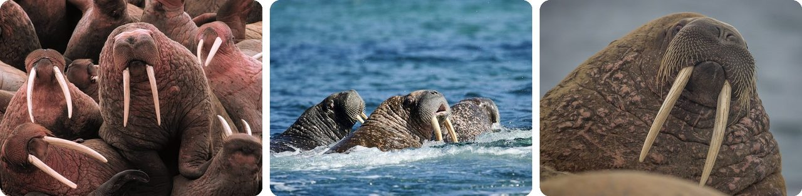
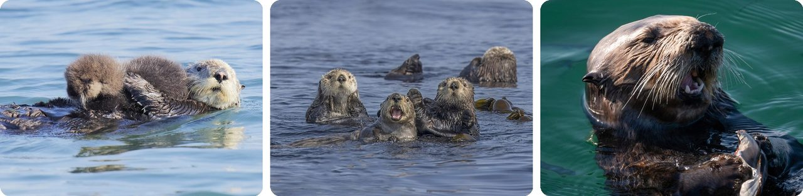
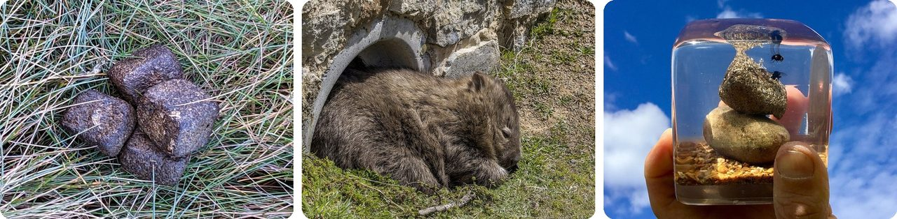
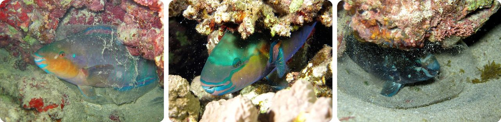
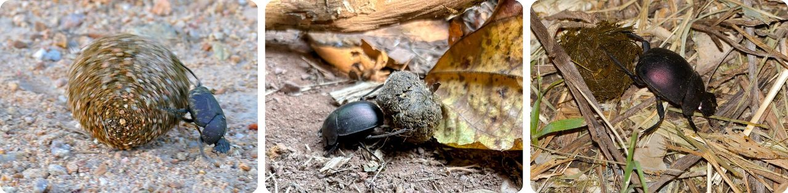
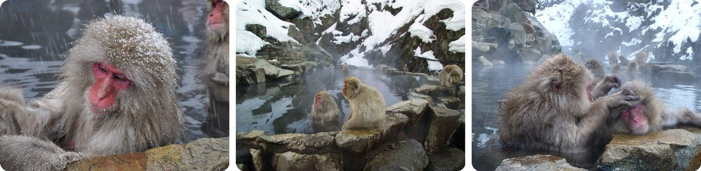
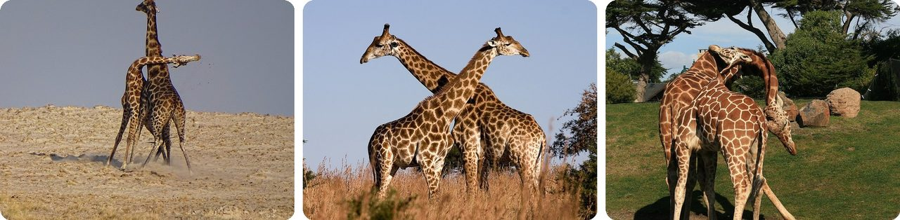
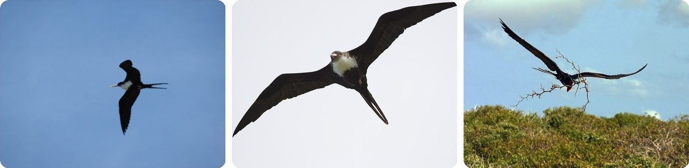
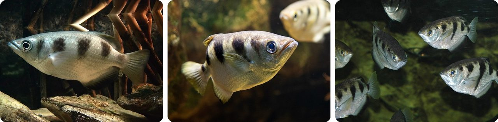
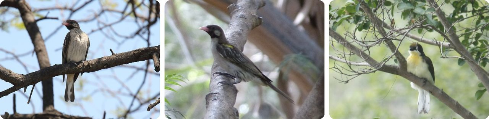

🌍 Top 10 Comportamientos animales rarísimos
2 de noviembre de 2026
1. 🇷🇺 Las morsas suben acantilados y se caen al intentar bajar

Las morsas suelen descansar sobre el hielo marino flotante entre una zambullida y otra para buscar almejas en el fondo del mar. Pero el hielo cerca de la costa se está achicando, así que salen a tierra (se arrastran hasta la orilla) en las playas, a veces decenas de miles a la vez.
En 2017, un equipo que filmaba Nuestro planeta para Netflix grabó a más de 100,000 morsas apretadas en una sola playa de Chukotka, en el extremo noreste de Rusia. Como ya no cabían, algunas subieron los acantilados de 80 metros que había arriba, más o menos tan altos como un edificio de 25 pisos. Un macho adulto puede pesar más de 2,000 kg.
Aquí viene la parte mortal. Los ojos de la morsa están hechos para ver de cerca bajo el agua, así que en tierra ve mal. Cuando les dio hambre y las de abajo regresaron al mar, las de arriba intentaron seguirlas. El equipo las vio tambalearse en la orilla durante horas, y cientos cayeron y murieron.
No todos están de acuerdo en el porqué. Un crítico dijo que probablemente los osos polares las empujaron al vacío, pero los cineastas dijeron que su equipo estaba vigilando los acantilados y no vio osos persiguiéndolas.
O sea, el acantilado no es la meta. Es adonde termina una morsa apretujada y corta de vista cuando ya no queda hielo para descansar.
2. 🦦 Las nutrias marinas guardan una piedra en un bolsillo bajo el brazo

Debajo de cada pata delantera, la nutria marina tiene un pliegue de piel suelta que le cruza el pecho como un bolsillo. Ahí mete comida mientras bucea, y a veces también una piedra. Casi siempre usa el bolsillo izquierdo.
Ya en la superficie, la nutria flota boca arriba, se pone la piedra en el pecho y golpea almejas y mariscos contra ella hasta romperlos. Para despegar un abulón (un caracol de mar con concha muy dura) de las rocas, lo martilla con una piedra: a una la vieron dar 45 golpes en 15 segundos, tres golpes por segundo.
Eso hace de la nutria marina uno de los pocos mamíferos que usan herramientas.
Es una mesa de pícnic flotante con su propio cascanueces.
3. 🇦🇺 Los wómbats hacen popó en forma de cubo

Los wómbats de Australia dejan popó con forma de cubitos. Un solo wómbat suelta de 80 a 100 piezas por noche, cada una de unos 2 cm de lado, más o menos del tamaño de un dado, de cuatro a ocho cada vez.
¿Cómo? Los científicos creen que las paredes del intestino del wómbat no son iguales por todos lados: dos partes son elásticas y dos son rígidas. Cuando la popó pasa por ahí, se le van marcando las esquinas.
Los wómbats apilan estos cubos para marcar su territorio y atraer pareja, y un cubo no se puede ir rodando. En 2019, los científicos que lo descubrieron, Patricia Yang y David Hu, ganaron un Premio Ig Nobel de Física.
Piénsalo como dejarles recados a los vecinos, pero en bloques de construcción.
4. 🐠 Algunos peces loro duermen dentro de una burbuja de su propia baba

De noche, algunos peces loro, como el pez loro reina, se quedan quietos en el arrecife y sacan un moco baboso por la boca. Se extiende en una burbuja transparente que envuelve a todo el pez.
La burbuja tal vez esconde el olor del pez para que no lo encuentren los cazadores. También podría funcionar como alarma: si una morena choca con la burbuja, el pez lo siente y tiene ventaja para escapar.
De día, los peces loro raspan y mastican roca de coral, y lo que no pueden digerir lo hacen popó en forma de arena. Un solo pez loro cototo puede producir 90 kg de arena al año, más o menos lo que pesa un hombre adulto.
En pocas palabras, es una bolsa de dormir con alarma antirrobo.
5. 🌌 Un escarabajo pelotero se guía por la Vía Láctea

Los escarabajos peloteros que ruedan bolas hacen una pelota de popó y la empujan rápido lejos del montón, antes de que otro escarabajo se la robe. Para escapar, necesitan rodar en línea recta.
Un escarabajo africano que trabaja de noche, Scarabaeus satyrus, usa el cielo para lograrlo. Puede mantener su rumbo cuando solo se ven la Vía Láctea o unos cuantos grupos de estrellas brillantes, y eso hace de los escarabajos peloteros los únicos insectos que se sabe que se orientan por nuestra galaxia. Otra especie africana se guía por patrones en la luz de la luna.
Y son fuertísimos. El macho de una especie puede jalar 1,141 veces su propio peso, como si una persona jalara seis autobuses de dos pisos llenos de gente.
Dicho de otro modo, es un empujador de popó con mapa de estrellas.
6. 🇯🇵 Los monos de las nieves de Japón se remojan en aguas termales

En el Parque de Monos de Jigokudani, en Nagano, a 850 metros de altura, la nieve cubre el suelo cuatro meses al año. En invierno, los macacos japoneses salvajes (muchas veces llamados monos de las nieves) bajan de los acantilados y del bosque y se sientan en el agua tibia del onsen (aguas termales).
Todo empezó por la gente. En los años 60, animaron a los monos a juntarse ahí, en parte para que no saquearan las granjas de los alrededores.
Bañarse en invierno va de la mano con menos estrés, y las hembras de mayor rango acaparan el agua caliente. Estos monos hasta hacen bolas de nieve, nada más por diversión.
Un día de spa donde las jefas se quedan con los mejores lugares.
7. 🦒 Las jirafas macho pelean balanceando el cuello como un martillo

En África, las jirafas macho deciden quién manda con el "necking", una pelea a cuellazos. En la versión suave, dos machos se recargan y se frotan uno contra el otro, y gana el que se mantiene más derecho.
En la versión en serio, abren las patas delanteras y se lanzan el largo cuello uno contra el otro, tratando de pegar con sus osiconos (los bultos de hueso en lo alto de la cabeza). Mientras más pesado el cráneo y más grande el columpio, más fuerte el golpe. Un duelo puede durar más de media hora.
La mayoría de las peleas terminan sin heridas graves, pero se han registrado mandíbulas rotas, cuellos rotos y hasta muertes. Los ganadores tienen más oportunidades de aparearse.
En pocas palabras, es una pelea de espadas donde la espada es tu propio cuello.
8. 🐦 Las fragatas duermen mientras vuelan

Las fragatas cazan sobre el mar, pero no pueden posarse en él: sus patas casi no tienen membrana y sus alas no son del todo impermeables. Por eso se quedan arriba, aprovechando el viento. Una fragata grande seguida por satélite en el océano Índico se quedó en el aire dos meses.
¿Y cuándo duermen? Los científicos descubrieron que toman siestas en el aire, casi siempre con solo una mitad del cerebro a la vez, mientras suben con las corrientes de aire. El ojo del lado despierto mira hacia donde va el ave.
Todo ese sueño en pleno vuelo sumaba menos de una hora por noche.
Piénsalo como echarse una siesta con un ojo en el camino.
9. 🏹 El pez arquero derriba insectos a chorros de agua

Los peces arqueros viven en ríos, estanques y manglares desde la India y el sudeste de Asia hasta el norte de Australia. Cuando uno ve un insecto en una hoja sobre el agua, saca los labios a la superficie y aprieta las tapas de las branquias, y eso empuja el agua por una ranura en su boca.
El chorro tiene una forma en la que la parte de atrás va más rápido que la de adelante, así que se junta en una sola gota gorda justo antes de pegar. El pez puede tumbar a su presa desde hasta 3 m (10 ft) sobre el agua, más o menos la altura de una canasta de básquetbol, y corrige la puntería por cómo el agua dobla la luz.
Los peces arqueros jóvenes fallan mucho al principio y tienen que aprender. Hasta pueden mejorar solo con ver disparar a otro pez.
Es una pistola de agua con corrector de puntería integrado.
10. 🇲🇿 Los indicadores responden a un llamado humano y llevan a la gente a la miel

El indicador grande, un pajarito de África, sabe dónde están muchos nidos de abejas silvestres. En el norte de Mozambique, los cazadores de miel yao lo llaman con un sonido especial, "brrrr-hmm", y las aves responden.
Luego el pájaro hace un parloteo para llamar su atención y vuela hacia un nido de abejas, y se detiene cerca. Los cazadores calman a las abejas con humo, abren el nido y sacan la miel. El pájaro se queda con la cera que sobra y se la come.
Y sí que vale la pena. En Tanzania, los indicadores ayudaron a los cazadores hadza a encontrar nidos de abejas un 560 % más seguido, más de seis veces más.
O sea, es un pájaro que da indicaciones para llegar a la miel y cobra en cera.
Dato curioso
Las morsas sí se caen de los acantilados, pero los lemmings no saltan. La idea de que los lemmings se lanzan de los acantilados en un suicidio masivo se extendió después de la película de Disney de 1958 White Wilderness, y un reportero de la televisión canadiense descubrió después que la escena fue montada: llevaron al mismo grupito de lemmings al río Bow, cerca de Canmore, Alberta, los sacudieron en plataformas giratorias y los empujaron por un acantilado una y otra vez. Hasta la toma de un osezno polar resbalando por una pendiente de hielo del Ártico se filmó en un estudio en Calgary. Los mitos famosos sobre animales, y de dónde salieron de verdad, podrían ser un gran tema para explorar después.
Créditos de las fotos (Wikimedia Commons)
- #1: Pacific Walrus at Cape Peirce - DPLA - 044088b29b26ec249f1a2e08d51840a3.jpg by Department of the Interior. U.S. Fish and Wildlife Service. National Conservation Training Center. 10/1997-8888, Public domain
- #1: Odobenus rosmarus divergens · Providenskiy rayon, RU-CK, RU by (c) garywwilson, some rights reserved (CC BY), CC BY
- #1: Walrus (Odobenus rosmarus) on Svalbard.jpg by AWeith, CC BY-SA 4.0
- #2: Enhydra lutris nereis · California, US by (c) benjchristensen, some rights reserved (CC BY), CC BY
- #2: Northern sea otters (Enhydra lutris kenyoni) Tofino.jpg by Charles J. Sharp, CC BY-SA 4.0
- #2: Enhydra lutris nereis · California, US by (c) Jonathan Eisen, some rights reserved (CC BY), CC BY
- #3: Wombat Faeces.jpg by SojournerRL, CC0
- #3: Common wombat (Vombatus ursinus) Maria Island.jpg by Charles J. Sharp, CC BY-SA 4.0
- #3: Wombat (Vombatus ursinus) poo.jpg by PooMuseum, CC BY-SA 4.0
- #4: Scarus zelindae.jpg by Igor Cristino Silva Cruz, CC BY-SA 4.0
- #4: Poisson-perroquet dormant (Scarus) (Ifremer 00619-73123 - 29089).jpg by Jerome Paillet (IFREMER, Laboratoire d'Océanographie Physique et Spatiale, Centre Bretagne - ZI de la Pointe du Diable - CS 10070 - 29280 Plouzané), CC BY 4.0
- #4: Scarus trispinosus dormindo.tif by Igor Cristino Silva Cruz, CC BY-SA 4.0
- #5: Large Copper Dung Beetle (Kheper nigroaeneus) rolling a dung ball (15823074113).jpg by Bernard DUPONT from FRANCE, CC BY-SA 2.0
- #5: Dung Beetle Tanzania 2025.jpg by AmyAbroad, CC BY-SA 4.0
- #5: Plum Dung Beetle (Anachalcos convexus) rolling a ball at night (12598065815).jpg by Bernard DUPONT from FRANCE, CC BY-SA 2.0
- #6: Japanese Macaque, Nagano, Japan..JPG by Yblieb, CC BY-SA 3.0
- #6: JapaneseMacaqueM2216.jpg by No machine-readable author provided. Fg2 assumed (based on copyright claims)., Public domain
- #6: Onsen Macaque.JPG by Asteiner, CC BY 3.0
- #7: Giraffe-Necking-Etosha.JPG by Bjørn Christian Tørrissen, CC BY-SA 4.0
- #7: Giraffe Ithala KZN South Africa Luca Galuzzi 2004.JPG by Luca Galuzzi (Lucag), CC BY-SA 2.5
- #7: Two male giraffes are necking in San Francisco Zoo.jpg by Brocken Inaglory, CC BY-SA 3.0
- #8: Starr 080603-5598 Fregata minor.jpg by Forest & Kim Starr, CC BY 3.0
- #8: Great frigatebird (4113376417).jpg by Matt MacGillivray from Toronto, Canada, CC BY 2.0
- #8: Male greater frigate bird building nest.jpg by Charles J. Sharp, CC BY-SA 3.0
- #9: Toxotes jaculatrix.jpg by Chrumps, CC BY-SA 3.0
- #9: Toxotes jaculatrix - 9313.jpg by Amada44, CC BY-SA 3.0
- #9: Toxotes jaculatrix (banded archerfish) 4 (15533393159).jpg by James St. John, CC BY 2.0
- #10: Greater Honeyguide (Indicator indicator) (45663851145).jpg by Dominic Sherony, CC BY-SA 2.0
- #10: Indicator indicator · Darsalami Highway, Western Division, GM by no rights reserved, CC0
- #10: Indicator indicator · Waterberg District Municipality, South Africa by no rights reserved, CC0

_on_Svalbard.jpg){kind=link}
_Tofino.jpg){kind=link}

_Maria_Island.jpg){kind=link}
_poo.jpg){kind=link}

_(Ifremer_00619-73123_-_29089).jpg){kind=link}
_rolling_a_dung_ball_(15823074113).jpg){kind=link}

_rolling_a_ball_at_night_(12598065815).jpg){kind=link}


.jpg){kind=link}


_4_(15533393159).jpg){kind=link}
_(45663851145).jpg){kind=link}